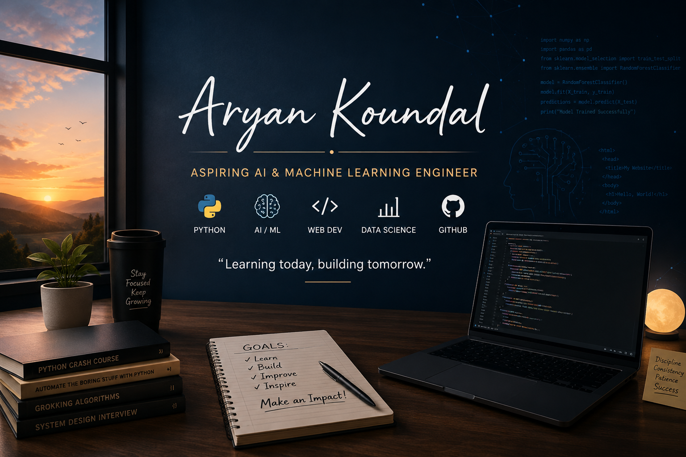

My name is Aryan Koundal, and I am currently pursuing a Bachelor of Computer Applications (BCA). I have a strong interest in technology, programming, and the way software can be used to solve real-world problems. I started my coding journey with the goal of developing a strong foundation in computer science and gradually becoming a skilled developer. During my learning journey, I have been exploring Python and practicing different programming concepts such as variables, conditional statements, loops, functions, data structures, file handling, and object-oriented programming. I also practice programming problems to improve my logical thinking and problem-solving abilities. Along with programming, I have recently started learning web development, beginning with HTML and moving toward CSS. I enjoy experimenting with my code, creating small projects, and understanding why something works instead of simply copying a solution. Whenever I encounter an error, I try to understand the reason behind it and learn how to fix it, because I believe that mistakes and debugging are an important part of becoming a better programmer. My long-term goal is to become an Artificial Intelligence and Machine Learning Engineer and work with technologies such as Machine Learning, Deep Learning, Data Science, and Python. I want to build useful real-world projects, continuously improve my technical skills, and create a strong portfolio that represents my progress as a developer. I understand that becoming highly skilled in technology takes time, consistency, and a lot of practice, so I am focusing on learning step by step and improving every day. My aim is not only to learn programming languages but also to develop the ability to use them creatively to build meaningful and useful applications.
Introduction
My name is Aryan Koundal, and I am currently pursuing a Bachelor of Computer Applications (BCA). I am passionate about technology and especially interested in programming, Artificial Intelligence, and Machine Learning.
My Learning Journey
I started my coding journey in July 2026. I began with Python and have been gradually building my programming fundamentals. I have learned concepts such as variables, loops, functions, lists, dictionaries, file handling, and object-oriented programming. I also practice programming problems on platforms like LeetCode to improve my problem-solving skills.
Web Development
Along with Python, I have recently started learning web development. I have completed the fundamentals of HTML, including headings, paragraphs, links, images, forms, tables, and other basic HTML elements. My next step is to learn CSS and gradually move toward backend development.
My Goals
My long-term goal is to become an AI and Machine Learning Engineer. I want to develop strong programming and problem-solving skills and eventually build real-world projects involving AI, Machine Learning, and Data Science. I also want to create projects that I can showcase on GitHub and use to build my professional portfolio.
My Approach
I believe in learning step by step and understanding the concepts rather than simply memorizing code. Whenever I encounter an error or something I don't understand, I try to find out why it happens and how it can be fixed. I am still at the beginning of my journey, but I am consistently learning and improving my skills.